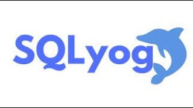

ORÍGENES DE LAS BASES DE DATOS
Los orígenes de las bases de datos se remontan a la Antigüedad donde ya existían bibliotecas y toda clase de registros. Además también se utilizaban para recoger información sobre las cosechas y censos. Sin embargo, su búsqueda era lenta y poco eficaz y no se contaba con la ayuda de máquinas que pudiesen reemplazar el trabajo manual.
Posteriormente, el uso de las bases de datos se desarrolló a partir de las necesidades de almacenar grandes cantidades de información o datos. Sobre todo, desde la aparición de las primeras computadoras, el concepto de bases de datos ha estado siempre ligado a la informática.
En 1884 Herman Hollerith creó la máquina automática de tarjetas perforadas, siendo nombrado así el primer ingeniero estadístico de la historia. En esta época, los censos se realizaban de forma manual.
Década de 1960
Posteriormente en la época de los sesenta, las computadoras bajaron los precios para que las compañías privadas las pudiesen adquirir; dando paso a que se popularizara el uso de los discos, cosa que fue un adelanto muy efectivo en la época, debido a que a partir de este soporte se podía consultar la información directamente, sin tener que saber la ubicación exacta de los datos.
En esta misma época se dio inicio a las primeras generaciones de bases de datos de red y las bases de datos jerárquicas, ya que era posible guardar estructuras de datos en listas y arboles.
Otro de los principales logros de los años sesenta fue la alianza de IBM y American Airlines para desarrollar SABRE, un sistema operativo que manejaba las reservas de vuelos, transacciones e informaciones sobre los pasajeros de la compañía American Airlines.
Década de 1970
Por lo que respecta a la década de los setenta, Edgar Frank Codd, científico informático ingles conocido por sus aportaciones a la teoría de bases de datos relacionales, definió el modelo relacional a la par que publicó una serie de reglas para los sistemas de datos relacionales a través de su artículo “Un modelo relacional de datos para grandes bancos de datos compartidos”.
Como consecuencia de esto, durante la década de 1970, Lawrence J. Ellison, más conocido como Larry Ellison, a partir del trabajo de Edgar F. Codd sobre los sistemas de bases de datos relacionales, desarrolló el Relational Software System, o lo que es lo mismo, lo que actualmente se conoce como Oracle Corporation, desarrollando así un sistema de gestión de bases de datos relacional con el mismo nombre que dicha compañía.

Cabe destacar que ORACLE es considerado como uno de los sistemas de bases de datos más completos que existen en el mundo, y aunque su dominio en el mercado de servidores empresariales ha sido casi total hasta hace relativamente poco, actualmente sufre la competencia del SQL Server de la compañía Microsoft y de la oferta de otros Sistemas Administradores de Bases de Datos Relacionales con licencia libre como es el caso de PostgreSQL, MySQL o Firebird que aparecerían posteriormente en la década de 1990
Década de 1980
Por su parte, a principios de los años ochenta comenzó el auge de la comercialización de los sistemas relacionales, y SQL comenzó a ser el estándar de la industria, ya que las bases de datos relacionales con su sistema de tablas (compuesta por filas y columnas) pudieron competir con las bases jerárquicas y de red, como consecuencia de que su nivel de programación era sencillo y su nivel de programación era relativamente bajo.

Década años 1990
En la década de 1990 la investigación en bases de datos giró en torno a las bases de datos orientadas a objetos. Las cuales han tenido bastante éxito a la hora de gestionar datos complejos en los campos donde las bases de datos relacionales no han podido desarrollarse de forma eficiente. Así se desarrollaron herramientas como Excel y Access del paquete de Microsoft Office que marcan el inicio de las bases de datos orientadas a objetos.

Siglo XXI
En la actualidad, las tres grandes compañías que dominan el mercado de las bases de datos son IBM, Microsoft y Oracle. Por su parte, en el campo de internet, la compañía que genera gran cantidad de información es Google. Aunque existe una gran variedad de software que permiten crear y manejar bases de datos con gran facilidad, como por ejemplo LINQ, que es un proyecto de Microsoft que agrega consultas nativas semejantes a las de SQL a los lenguajes de la plataforma .NET. El objetivo de este proyecto es permitir que todo el código hecho en Visual Studio sean también orientados a objetos; ya que antes de LINQ la manipulación de datos externos tenía un concepto más estructurado que orientado a objetos; y es por eso que trata de facilitar y estandarizar el acceso a dichos objetos.
¿CÓMO FUNCIONA LA BASE DE DATOS?
Almacena datos y los conecta en una unidad lógica junto a los metadatos necesarios para su procesamiento. Las bases de datos son instrumentos de gran utilidad para gestionar grandes ficheros y facilitar la consulta de información. En muchas, además, puede definirse un esquema de permisos que establece qué personas o programas pueden acceder a los datos, y a cuáles, con el objetivo de presentar el contenido de forma adecuada y clara.
CONCEPTOS BÁSICOS DE BASES DE DATOS
Una base de datos es una herramienta para recopilar y organizar información. Las bases de datos pueden almacenar información sobre personas, productos, pedidos u otras cosas. Muchas bases de datos comienzan como una lista en una hoja de cálculo o en un programa de procesamiento de texto. A medida que la lista aumenta su tamaño, empiezan a aparecer redundancias e inconsistencias en los datos. Cada vez es más difícil comprender los datos en forma de lista y los métodos de búsqueda o extracción de subconjuntos de datos para revisión son limitados. Una vez que estos problemas comienzan a aparecer, una buena idea es transferir los datos a una base de datos creada con un sistema de administración de bases de datos (DBMS).
Agregar nuevos datos a una base de datos, como un nuevo artículo en un inventario.
Modificar datos existentes en la base de datos, por ejemplo, cambiar la ubicación actual de un artículo.
Eliminar información, por ejemplo, si un artículo se vende o se descarta.
Organizar y ver los datos de diferentes formas.
Partes de una base de datos
Tablas
Una tabla de base de datos es similar en apariencia a una hoja de cálculo en cuanto a que los datos se almacenan en filas y columnas. Por ende, es bastante fácil importar una hoja de cálculo en una tabla de base de datos. La principal diferencia entre almacenar los datos en una hoja de cálculo y almacenarlos en una base de datos es la forma en la que están organizados los datos.
Formularios
Los formularios permiten crear una interfaz de usuario en la que puede escribir y modificar datos. Los formularios a menudo contienen botones de comandos y otros controles que realizan distintas tareas. Puede crear una base de datos sin usar formularios con tan solo modificar los datos en las hojas de datos de la tabla. Sin embargo, la mayoría de los usuarios de bases de datos prefieren usar formularios para ver, escribir y modificar datos en las tablas.
Informes
Generalmente, se les da formato a los informes para imprimirlos, pero también pueden verse en pantalla, exportarse a otro programa o enviarse como datos adjuntos en un correo electrónico.
Consultas
Las consultas pueden realizar diversas funciones en una base de datos. La función más común es recuperar datos específicos de las tablas. Los datos que quiere ver generalmente están distribuidos en varias tablas y las consultas le permiten verlos en una única hoja de datos. Además, debido a que muchas veces no quiere ver todos los registros a la vez, las consultas le permiten agregar criterios para "filtrar" los datos y obtener solo los registros que quiere.
Macros
Las macros contienen acciones que ejecutan tareas, como abrir un informe, ejecutar una consulta o cerrar la base de datos.
Módulos
Los módulos, como las macros, son objetos que puede usar para agregar funciones a la base de datos.
EXPLICACION DE ODBC
ODBC (Open Database Connectivity) es una API (Interfaz de Programación de Aplicaciones) estándar que permite a las aplicaciones acceder y trabajar con datos almacenados en diferentes sistemas de gestión de bases de datos (DBMS) de manera uniforme. Fue desarrollada por Microsoft en 1992 y ha sido ampliamente adoptada por muchos fabricantes de software y sistemas operativos.
La principal ventaja de ODBC radica en su capacidad para proporcionar una capa de abstracción entre la aplicación y el DBMS subyacente. Esto significa que una aplicación puede estar escrita de manera independiente al sistema de base de datos específico que utiliza, lo que simplifica el desarrollo y el mantenimiento de la aplicación en entornos donde se utilizan diferentes bases de datos.
A continuación, se presenta un breve esquema de cómo funciona ODBC:
Aplicación: Una aplicación desea acceder a una base de datos para leer o escribir datos.
Llamadas a ODBC: La aplicación utiliza las funciones de la API ODBC para realizar operaciones de base de datos, como conectar a la base de datos, ejecutar consultas SQL, recuperar resultados, entre otras.
Controlador ODBC: El controlador ODBC correspondiente al DBMS con el que la aplicación desea interactuar recibe las llamadas de la API ODBC.
Traducción y comunicación: El controlador ODBC traduce las llamadas ODBC a un formato adecuado para el DBMS específico y comunica las solicitudes y respuestas entre la aplicación y la base de datos.
Ejecución en el DBMS: El DBMS procesa las operaciones solicitadas y devuelve los resultados al controlador ODBC.
Respuesta a la aplicación: El controlador ODBC recibe los resultados del DBMS y los traduce al formato de la API ODBC para que la aplicación los pueda utilizar.
Resultado en la aplicación: La aplicación obtiene los resultados de la operación de la base de datos y puede presentarlos o manipularlos según sea necesario.
TIPOS DE BASE DE DATOS
Bases de datos relacionales (RDBMS)
Son las bases de datos más tradicionales y ampliamente utilizadas. Utilizan el modelo relacional, donde los datos se organizan en tablas con filas y columnas. Las relaciones entre tablas se establecen mediante claves primarias y claves externas (claves foráneas). Ejemplos populares de RDBMS incluyen MySQL, PostgreSQL, Oracle, Microsoft SQL Server y SQLite.
on bases de datos que se alejan del modelo relacional y proporcionan un enfoque más flexible para el almacenamiento y recuperación de datos. Los principales tipos de bases de datos NoSQL son:
Bases de datos de documentos: Almacenan datos en documentos similares a JSON o XML, y cada documento puede tener una estructura diferente. Ejemplos: MongoDB, Couchbase.
Bases de datos de grafos: Almacenan datos en forma de nodos y bordes, lo que es útil para representar y consultar relaciones complejas. Ejemplos: Neo4j, Amazon Neptune.
Bases de datos clave-valor: Almacenan datos como pares clave-valor, donde la clave es un identificador único y el valor puede ser cualquier tipo de dato. Ejemplos: Redis, Amazon DynamoDB.
Bases de datos de columnas: Almacenan datos en columnas en lugar de filas, lo que permite una alta compresión y consultas eficientes para grandes conjuntos de datos. Ejemplos: Apache Cassandra, HBase.
Bases de datos en memoria
Estas bases de datos almacenan los datos en la memoria RAM del sistema, lo que permite un acceso mucho más rápido a los datos que en las bases de datos tradicionales que acceden a los datos desde el disco duro. Ejemplos: Redis (también es una base de datos NoSQL), Memcached.
Bases de datos orientadas a objetos
Permiten almacenar objetos directamente en la base de datos y mantener la estructura y comportamiento de los objetos en lugar de traducirlos a tablas y filas como en las bases de datos relacionales.
Bases de datos distribuidas
Estas bases de datos suelen ser escalables horizontalmente y pueden distribuir los datos en diferentes ubicaciones geográficas para mejorar el rendimiento y la disponibilidad.
MySQL
MySQL es un sistema de gestión de bases de datos relacionales (RDBMS) de código abierto respaldado por Oracle y basado en el lenguaje de consulta estructurado (SQL). MySQL funciona prácticamente en todas las plataformas, incluyendo Linux, UNIX y Windows. Aunque puede utilizarse en una amplia gama de aplicaciones, MySQL se asocia más a menudo con las aplicaciones web y la publicación en línea.
Originalmente concebido por la empresa sueca MySQL AB, MySQL fue adquirido por Sun Microsystems en 2008 y luego por Oracle cuando compró Sun en 2010. Los desarrolladores pueden utilizar MySQL bajo la licencia pública general GNU (GPL), pero las empresas deben obtener una licencia comercial de Oracle.
Cómo funciona MySQL

MySQL funciona junto con varios programas de utilidad que soportan la administración de las bases de datos MySQL. Los comandos se envían a MySQLServer a través del cliente MySQL, que se instala en una computadora.
MySQL fue desarrollado originalmente para manejar rápidamente grandes bases de datos. Aunque MySQL se instala normalmente en una sola máquina, es capaz de enviar la base de datos a múltiples lugares, ya que los usuarios pueden acceder a ella a través de diferentes interfaces de cliente MySQL. Estas interfaces envían sentencias SQL al servidor y luego muestran los resultados.
Caracteristicas
Permite almacenar y acceder a los datos a través de múltiples motores de almacenamiento, incluyendo InnoDB, CSV y NDB. MySQL también es capaz de replicar datos y particionar tablas para mejorar el rendimiento y la durabilidad. Los usuarios de MySQL no tienen que aprender nuevos comandos; pueden acceder a sus datos utilizando comandos SQL estándar.
MySQL está escrito en C y C++ y es accesible y está disponible en más de 20 plataformas, como Mac, Windows, Linux y Unix. El RDBMS soporta grandes bases de datos con millones de registros y admite muchos tipos de datos, como enteros con o sin signo de 1, 2, 3, 4 y 8 bytes de longitud; FLOAT; DOUBLE; CHAR; VARCHAR; BINARY; VARBINARY; TEXT; BLOB; DATE; TIME; DATETIME; TIMESTAMP; YEAR; SET; ENUM; y tipos espaciales OpenGIS. También se admiten tipos de cadena de longitud fija y variable.
ACCESS
Puede usar Access para automatizar acciones realizadas con frecuencia y los informes de Access le permiten resumir datos en forma impresa o electrónica. Access proporciona más estructura para los datos; por ejemplo, puede controlar qué tipos de datos se pueden escribir, qué valores se pueden escribir y especificar cómo se relacionan los datos de una tabla con los de otras tablas. Esta estructura le ayuda a garantizar que solo se escriban los tipos de datos correctos.
Access almacena datos en tablas que tienen un aspecto muy parecido al de las hojas de cálculo, pero las tablas de Access están diseñadas para realizar consultas complejas en relación con los datos almacenados en otras tablas.
Anticipe que hay muchas personas trabajando en la base de datos y desea opciones sólidas que controlen de forma segura las actualizaciones de los datos, como el bloqueo de registros y la resolución de conflictos.
Anticipe la necesidad de agregar más tablas a un conjunto de datos que se originó como una tabla plana o no relacionada.
Desea ejecutar consultas complejas.
Desea producir una variedad de informes o etiquetas postales.
POSTGRES
PostgreSQL es una base de datos de código abierto con una sólida reputación de confiabilidad, flexibilidad y compatibilidad con estándares técnicos abiertos.
Esto convierte a Postgres en una de las bases de datos más consolidadas. Originalmente desarrollado en 1986 como INGRES (un proyecto de base de datos relacional SQL de código abierto iniciado a principios de la década de 1970), el sucesor de POSTGRES, ahora conocido como PostgreSQL, es una creación del profesor de informática de Berkeley Michael Stonebraker.
En 1994, el proyecto agregó soporte para SQL y PostgreSQL lo siguió poco después. Una de las mejores características de PostgreSQL es su extensibilidad. Los desarrolladores pueden crear extensiones personalizadas para agregar nuevas funciones, ampliando enormemente su potencial y adaptándolas a diferentes casos de uso.
Otra ventaja es su comunidad activa y enfocada. PostgreSQL tiene una gran cantidad de usuarios y colaboradores que brindan soporte, actualizaciones y mejoras constantes. Además, su licencia de código abierto permite a los usuarios acceder, modificar y distribuir libremente el código fuente.
Caracteristicas
Fiabilidad y cumplimiento de normas
PostgreSQL proporciona una verdadera semántica ACID para transacciones y es totalmente compatible con claves foráneas, uniones, vistas, disparadores y procedimientos almacenados en muchos idiomas diferentes.
PostgreSQL es compatible con Unicode, conjuntos de caracteres internacionales, codificaciones de caracteres de varios bytes y clasificación, distinción de mayúsculas y minúsculas.
Proporciona robustas funciones de seguridad, como autenticación de usuarios, encriptación y control de acceso a nivel de columnas.
APLICACIONES PARA GESTION DE BASES DE DATOS
SQLYOG
SQLyog es un software extraordinario que proporciona a los usuarios de MySQL una forma más sencilla y menos molesta de interactuar con el motor de base de datos. La administración de MySQL implica el uso de archivos de configuración y herramientas que no son objetivamente fáciles de usar. SQLyog resuelve este problema proporcionando a los usuarios una interfaz gráfica de usuario (GUI) que incluso los novatos en MySQL pueden comprender fácilmente.

Edición, Administración y Consultas Fáciles
La gestión de sus bases de datos MySQL nunca ha sido tan fácil. La utilización de la interfaz fácil de usar de SQLyog permite la realización de tareas de MySQL de manera más eficiente. Las consultas de manipulación de datos, como las funciones INSERT, UPDATE y DELETE se pueden realizar desde una interfaz similar a una hoja de cálculo. El software también permite manipular tanto los datos en bruto como los resultados de una consulta ejecutada previamente.
SQLyog proporciona copias de seguridad desatendidas, así como compresión y almacenamiento de datos con una marca de tiempo identificativa. Las operaciones sencillas se completan utilizando muchas herramientas y funciones diferentes que generan automáticamente consultas en la sintaxis SQL adecuada. Otras características incluyen una herramienta para la importación sencilla de datos desde bases de datos ODBC, un constructor visual de consultas, un diseñador visual de esquemas y una herramienta de formateo de consultas.
HEIDY
HeidiSQL es una excelente herramienta para gestionar una base de datos MySQL y constituye una seria alternativa a aplicaciones como phpMyAdmin. Proporciona una poderosa interfaz gráfica para administrar las tablas, los registros, y los usuarios de una base de datos en dicho formato.
Las principales actividades que puedes realizar con este programa son los siguientes:
 Generar informes SQL.
Sincronizar la información contenida en dos tablas diferentes.
Importar archivos de texto y exportar las tablas a otros formatos.
Generar informes SQL.
Sincronizar la información contenida en dos tablas diferentes.
Importar archivos de texto y exportar las tablas a otros formatos.
PgAdmin
PgAdmin proporciona una interfaz gráfica de usuario que facilita la administración y visualización de bases de datos PostgreSQL. Con esta herramienta, los administradores y desarrolladores pueden realizar diversas tareas, como crear, modificar y eliminar bases de datos y tablas, ejecutar consultas SQL, gestionar usuarios y permisos, realizar copias de seguridad y restauraciones y monitoreos al rendimiento.
 Interfaz gráfica de usuario: PgAdmin proporciona una interfaz gráfica fácil de usar que permite a los usuarios interactuar con la base de datos de forma visual y sin necesidad de escribir código SQL directamente.
Editor SQL: Ofrece un editor SQL completo con resaltado de sintaxis y sugerencias de código que facilitan la escritura y ejecución de consultas SQL.
Explorador de objetos: Permite navegar y visualizar la estructura de la base de datos, incluidas las tablas, vistas, índices, funciones almacenadas, entre otros.
Creación y modificación de objetos: PgAdmin permite crear, modificar y eliminar bases de datos, tablas, vistas, secuencias, funciones, procedimientos almacenados y otros objetos de base de datos.
Herramientas de importación y exportación: Permite importar y exportar datos entre bases de datos PostgreSQL y otros formatos de archivo, lo que facilita la migración de datos.
Interfaz gráfica de usuario: PgAdmin proporciona una interfaz gráfica fácil de usar que permite a los usuarios interactuar con la base de datos de forma visual y sin necesidad de escribir código SQL directamente.
Editor SQL: Ofrece un editor SQL completo con resaltado de sintaxis y sugerencias de código que facilitan la escritura y ejecución de consultas SQL.
Explorador de objetos: Permite navegar y visualizar la estructura de la base de datos, incluidas las tablas, vistas, índices, funciones almacenadas, entre otros.
Creación y modificación de objetos: PgAdmin permite crear, modificar y eliminar bases de datos, tablas, vistas, secuencias, funciones, procedimientos almacenados y otros objetos de base de datos.
Herramientas de importación y exportación: Permite importar y exportar datos entre bases de datos PostgreSQL y otros formatos de archivo, lo que facilita la migración de datos.
DBEAVER
Es un potente software para la gestión de bases de datos, libre y de código abierto para múltiples sistemas operativos. Nació en 2010, fruto de su popularidad en la comunidad de código abierto, ha experimentado una rápida expansión de sus características iniciales, incorporando las principales bases de datos SQL y NoSQL.
DBeaver facilita la administración y el desarrollo de bases de datos. La herramienta proporciona un editor de consultas SQL con resaltado de sintaxis, permitiendo a los usuarios interactuar con sus bases de datos de manera mucha más eficiente.
Una de las ventajas clave de DBeaver es su amplia compatibilidad con diversos sistemas de gestión de bases de datos. Ofrece soporte para bases de datos relacionales como PostgreSQL, MySQL, Oracle, Microsoft SQL Server, SQLite.
COMO FUNCIONA CADA MOTOR DE BASES DE DATOS
Funcionamiento de Access
Tablas
Las tablas son el elemento principal sobre el que vas a trabajar. Se puede decir que son la estructura que contiene tu base de datos.
Relaciones
Otra de las funciones de una base de datos de Access es la posibilidad de crear relaciones entre tablas. En concreto, estas son las relaciones que se pueden establecer.
Formulario
Los formularios permiten crear botones de comandos con los que se pueden realizar diversas tareas de forma más rápida. Hay usuarios que prefieren acudir a la tabla y cambiar los datos manualmente. Sin embargo, gracias a los formularios estas operaciones se simplifican gracias al uso de comandos que permiten crear una interfaz de usuario personalizada.
Reportes
Es una vista de la información almacenada en tu base de datos. Puedes utilizar informes para presentar los datos en un formato más fácil de entender, como tablas, gráficos, y otras representaciones visuales. Los informes te permiten analizar y resumir grandes cantidades de datos en un formato legible.
FUNCIONAMIENTO DE MARIADB-MYSQL
Tablas
Una tabla es una estructura de datos que organiza los datos en columnas y filas; cada columna es un campo (o atributo) y cada fila, un registro.
Relaciones
Una tabla es una estructura de datos que organiza los datos en columnas y filas; cada columna es un campo (o atributo) y cada fila, un registro.
Script de creacion de tablas
Podemos crear una tabla usando el comando CREATE TABLE. Para ello, primero vamos a conectarnos a MySQL/MariaDB y luego acceder a nuestra base de datos.
Script de creación de consultas
Con datos vamos a comenzar a generar consultas, desde las más sencillas hasta consultas más tediosas que requieren bastante esfuerzo y tiempo por nuestra parte.
FUNCIONAMIENTO DE POSTGRES
Tablas
Una tabla a grandes rasgos es una estructura de datos que organiza la información en filas y columnas donde la intersección de ambas contiene un valor.
Relaciones
Es un conjunto de datos, el orden en el que estos se almacenen no tiene relevancia (a diferencia de otros modelos como el jerárquico y el de red).
Script de creacion de tablas
Al crear una tabla debemos resolver qué campos (columnas) tendrá y que tipo de datos almacenarán cada uno de ellos, es decir, su estructura.
Script de creación de consultas
Si intentamos crear una tabla con un nombre ya existente (existe otra tabla con ese nombre), mostrará un mensaje indicando que ya hay un objeto llamado 'usuarios' en la base de datos y la sentencia no se ejecutará.